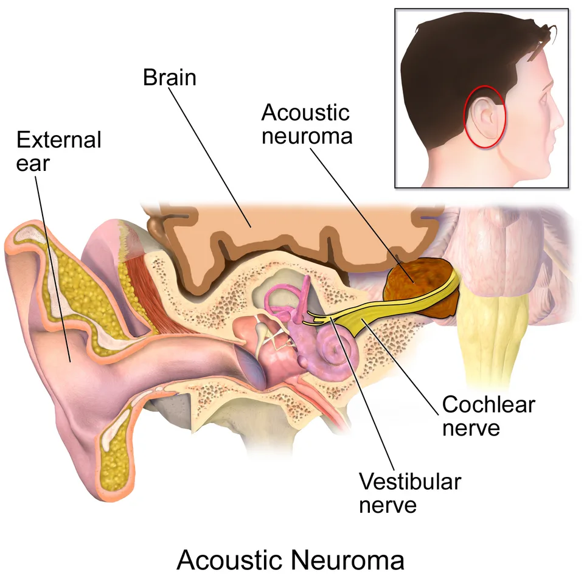

DX.8 — Schwannome vestibulaire
Le schwannome vestibulaire est une tumeur bénigne du nerf vestibulaire, logée dans le conduit auditif interne ou l’angle ponto-cérébelleuxS1S2. Le médecin de premier recours le recherche devant toute surdité de perception asymétrique, car l’hypoacousie progressive unilatérale en constitue le premier signeS1S5. L’imagerie par résonance magnétique (IRM) pose le diagnostic, puis une équipe multidisciplinaire choisit entre surveillance, radiochirurgie et microchirurgieS1S4.
1. Définition
Les Hôpitaux universitaires de Genève (HUG) définissent le schwannome vestibulaire comme une tumeur bénigne localisée sur le nerf vestibulaireS1. Le docteur Albert Mudry précise qu’il naît le plus souvent de la partie vestibulaire du nerf auditif et qu’il porte aussi le nom de neurinome de l’acoustiqueS2.
2. Épidémiologie (Suisse, puis Europe)
Aucune incidence suisse n’a été trouvée ; la seule donnée suisse lue est une série zurichoise de croissance, tandis que le registre danois fournit l’épidémiologie européenneS3S6. Le tableau des chiffres réunit prévalence, incidence et profil au diagnostic, et l’histoire naturelle décrit la croissance spontanéeS3S6. Les séries de croissance montrent l’écart entre centres européens et américains, qui tient surtout à la méthode de mesureS3.
Prévalence, incidence et profil au diagnostic
| Donnée | Population et mesure | Année | Source |
|---|---|---|---|
| Prévalence de 0,058 % au 1er janvier 2016 | Cohorte nationale danoise, tous les cas sporadiques diagnostiqués depuis 1976 | 2025 | S6 |
| Incidence passée de 0,3 à 3,4 cas pour 100 000 habitants par an | Même cohorte, période 1976–2016 | 2025 | S6 |
| Nombre annuel de diagnostics passé de 14 à 193 | Même cohorte ; 3637 nouveaux cas en tout | 2025 | S6 |
| Taille au diagnostic réduite de 26 à 7 mm | Même cohorte | 2025 | S6 |
| Âge moyen au diagnostic passé de 49 à 61 ans | Même cohorte ; plus de 20 % des patients avaient plus de 70 ans en 2015 | 2025 | S6 |
| Bonne audition au diagnostic chez 60 % des patients dans les années 2010, contre 20 % dans les années 1970 | Même cohorte | 2025 | S6 |
| Croissance chez 31 % des tumeurs observées | 74 patients suivis à Zurich, 2,9 ans de suivi, toute croissance linéaire | 2000 | S3 |
Les auteurs danois attribuent la hausse de l’incidence à un meilleur accès au diagnostic et au vieillissement, et non à une augmentation réelle de la maladieS6. Le rang 9 de la liste canonique repose sur ces chiffres, plus faibles que ceux des causes fréquentes comme la presbyacousieS6.
Histoire naturelle : croissance, stabilité ou régression
| Évolution | Fréquence | Population | Source |
|---|---|---|---|
| Croissance dans les 3 ans | Environ un tiers des tumeurs | Revue de séries observationnelles | S3 |
| Croissance à 3 ans et à 5 ans | 33 % puis 50 % | Revue systématique de Paldor | S3 |
| Croissance après 5 ans de stabilité | 8 % des tumeurs qui ont grandi (14 sur 172) | Série de longue durée de Macielak | S3 |
| Régression spontanée | 4 % en mesure linéaire ; 12 % en mesure volumétrique | Registre danois ; étude multicentrique de 952 patients | S3 |
| Évolution très lente | Environ 60 % des cas | Estimation d’un otologue suisse | S2 |
| Vitesse moyenne des petites tumeurs asymptomatiques | Environ 1 mm par an | Commentaire allemand de l’essai V-REX | S7 |
La croissance survient surtout dans les cinq premières années ; certains auteurs défendent pourtant une surveillance à vie, car des croissances tardives existentS3. Aucun paramètre initial ne prédit sûrement la croissance ; la croissance prouvée pendant la première année reste l’indice le plus constantS3.
Croissance sous surveillance : séries publiées
| Centre | Patients | Suivi (ans) | Définition de la croissance | Croissance | Source |
|---|---|---|---|---|---|
| Zurich, Suisse (Tschudi, 2000) | 74 | 2,9 | Toute croissance linéaire | 31 % | S3 |
| Lille, France (Bakkouri, 2009) | 325 | 1,0 | 3 mm ou plus, linéaire | 12 % | S3 |
| Cambridge, Royaume-Uni (Moffat, 2012) | 381 | 4,2 | Plus de 2 mm, linéaire | 33 % | S3 |
| Bergen, Norvège (Breivik, 2012) | 186 | 3,6 | Plus de 2 mm, linéaire | 40 % | S3 |
| Copenhague, Danemark (Reznitsky, 2021) | 2312 | 7,3 | Plus de 2 mm, linéaire | 19 % | S3 |
| Floride, États-Unis (Rosenberg, 2000) | 80 | 4,4 | Toute croissance linéaire | 58 % | S3 |
| Rochester, États-Unis (Lees, 2018) | 361 | 4,1 | 20 % ou plus, volumétrique | 69 % | S3 |
| Rochester et New York (Marinelli, 2022) | 952 | 1,6 | 20 % ou plus, volumétrique | 65 % | S3 |
Les séries volumétriques trouvent plus de croissance que les séries linéaires, car la mesure du volume détecte de plus petites variationsS3. Les trois dernières lignes proviennent de centres non européens, cités par la revue norvégienne ; elles sont signalées comme tellesS3.
3. Physiopathologie
Le nerf vestibulaire, le nerf cochléaire et le nerf facial traversent ensemble le conduit auditif interne, entre l’oreille interne et le tronc cérébralS1. La tumeur altère leur fonction par compression ou par la sécrétion de certaines substances, ce qui explique les symptômes du tableau mécanistiqueS1. L’anatomie du conduit et de l’angle précise pourquoi une même tumeur touche successivement l’audition, l’équilibre puis le visageS1S2.
Anatomie utile : conduit auditif interne et angle ponto-cérébelleux
| Espace | Contenu ou limite | Conséquence d’une tumeur | Source |
|---|---|---|---|
| Conduit auditif interne | Nerfs vestibulaire, cochléaire et facial, entre oreille interne et tronc cérébral | Compression précoce des nerfs auditifs dans un canal osseux étroit | S1 |
| Angle ponto-cérébelleux | Espace situé à la sortie du conduit dans le crâne | Croissance plus libre, puis contact avec le trijumeau et le tronc | S1S2 |
| Partie vestibulaire du nerf | Origine de la majorité des tumeurs | Tumeur souvent unilatérale | S2 |
| Croissance dans le conduit | Composante intracanalaire | Associée à la baisse auditive dans une étude | S3 |
| Croissance ventrale dans le conduit | Rapport étroit avec le nerf facial | Risque facial chirurgical accru, même à taille égale | S3 |
La croissance hors du conduit, à l’inverse, ne s’associait pas à la baisse auditive dans cette même étude citée par la revue norvégienneS3.
De la tumeur au symptôme : le mécanisme structure par structure
| Structure atteinte | Mécanisme | Symptôme | Stade | Source |
|---|---|---|---|---|
| Nerf cochléaire | Compression dans le conduit ou sécrétion de substances | Hypoacousie progressive unilatérale, acouphènes | Précoce | S1S2 |
| Nerf cochléaire | Atteinte rapide | Surdité soudaine | Possible à tout stade | S2 |
| Nerf vestibulaire | Tumeur née du nerf lui-même | Vertiges, instabilité | Variable | S1S2 |
| Nerf facial | Compression dans le conduit | Parésie faciale, troubles du goût | Formes avancées | S1 |
| Nerf trijumeau | Extension dans l’angle ponto-cérébelleux | Hypoesthésie du visage | Formes avancées | S1 |
| Tronc cérébral | Compression par une grande tumeur | Atteinte du système nerveux central | Formes avancées | S1S3 |
La croissance dans le conduit, plutôt qu’en dehors, s’associait à la baisse auditive dans une étude citée par la revue norvégienneS3. Le rôle du microenvironnement inflammatoire dans la croissance reste à l’étude ; le rapport neutrophiles sur lymphocytes a été proposé comme marqueurS3.
Coupe de l’oreille : le schwannome dans le conduit auditif interne : Blausen Medical a dessiné cette illustration en couleurs, publiée sous licence CC BY 3.0S9.

Le lecteur recherche d’abord sur le cliché brut la masse brune, le faisceau nerveux jaune et la cochlée.
- 1. Le repère 1 montre la tumeur, qui se développe sur le nerf vestibulaire à l’entrée de l’angle ponto-cérébelleuxS9S2.
- 2. Le repère 2 montre le faisceau nerveux dans le conduit auditif interne, où la tumeur comprime les nerfs voisinsS9S1.
- 3. Le repère 3 montre la cochlée, dont le nerf souffre en premier, ce qui explique l’hypoacousie initialeS9S1.
- 4. Le repère 4 montre le tronc cérébral, que seule une grande tumeur comprimeS9S1.
4. Démarche diagnostique
Le schwannome constitue le quatrième diagnostic d’exclusion (E4) : la démarche l’écarte après la surdité brusque, la fistule durale et le cholestéatome, devant toute asymétrieS5. Le tableau différentiel oppose les surdités unilatérales du LOT, puis les étapes de la démarche fixent le moment de l’IRMS1S5.
Diagnostic différentiel d’une surdité unilatérale de perception
| Diagnostic | Installation | Indice discriminant | Lien |
|---|---|---|---|
| Schwannome vestibulaire (DX.8) 🚩 E4 | Progressive, parfois soudaine | Asymétrie de perception, masse à l’IRM | S1S2 |
| Surdité brusque (DX.6) 🚩 E1 | En 3 jours ou moins | Urgence oto-rhino-laryngologique (ORL) ; l’IRM recherche ensuite une tumeur | DX.6 |
| Fistule artérioveineuse durale (DX.10) 🚩 E2 | Progressive | Acouphène pulsatile | DX.10 |
| Presbyacousie (DX.4) | Lente | Atteinte symétrique des deux oreilles | DX.4 |
| Surdité induite par le bruit (DX.5) | Lente | Exposition sonore, encoche vers 4 kHz | DX.5 |
| Otospongiose (DX.3) | Lente | Transmission à tympan normal | DX.3 |
| Maladie de Ménière (DX.7) | Par crises | Vertiges rotatoires, surdité fluctuante | DX.7 |
Une asymétrie isolée ne prouve rien ; elle impose seulement l’IRM selon les seuils audiométriques fixés par le NICE (National Institute for Health and Care Excellence)S5.
Étapes de la démarche et délais
| Étape | Acteur | Action | Seuil ou délai | Source |
|---|---|---|---|---|
| 1 | Médecin de premier recours | Otoscopie et diapason | Tympan normal, perception | S2 |
| 2 | Médecin de premier recours | Orienter si la surdité est brusque | Dans les 24 heures si elle date de moins de 30 jours | S5 |
| 3 | Audiologie ou ORL (oto-rhino-laryngologie) | Audiométrie tonale aux fréquences 0,5, 1, 2, 4 et 8 kHz | Asymétrie de 15 dB ou plus sur 2 fréquences voisines | S5 |
| 4 | ORL | IRM des conduits auditifs internes | D’emblée si un signe localisateur existe | S5 |
| 5 | Équipe multidisciplinaire | Choix du traitement | Selon taille, audition résiduelle et âge | S1 |
| 6 | Équipe et patient | Nouvelle IRM avant toute décision | Au moins six mois après le diagnostic | S2 |
5. Anamnèse ciblée et drapeaux rouges
L’anamnèse recherche une baisse auditive d’un seul côté, ses acouphènes et ses vertiges, puis les signes de souffrance des nerfs voisinsS1S2. Les questions ciblées cherchent l’asymétrie, l’acouphène du même côté et l’instabilité, et les drapeaux rouges accélèrent la filièreS1S5.
Questions ciblées et interprétation
| Question | Réponse évocatrice | Interprétation | Source |
|---|---|---|---|
| Entendez-vous moins bien d’une seule oreille ? | Oui, progressivement | Premier symptôme du schwannome | S1S2 |
| L’oreille a-t-elle baissé d’un coup ? | Oui | Surdité brusque ; le schwannome peut se révéler ainsi | S2S5 |
| Entendez-vous un sifflement du même côté ? | Oui | Acouphène unilatéral associé | S1 |
| Êtes-vous instable ou pris de vertiges ? | Oui | Atteinte vestibulaire ; l’instabilité objective s’associait à la croissance | S1S3 |
| Le goût a-t-il changé ? | Oui | Possible atteinte du nerf facial | S1 |
| Le visage est-il engourdi ? | Oui | Atteinte du trijumeau, forme avancée | S1 |
Drapeaux rouges et conduite
| Signe | Ce qu’il signifie | Conduite | Source |
|---|---|---|---|
| Parésie faciale avec hypoacousie | Lésion probable de l’angle ou du conduit | IRM quel que soit l’audiogramme | S5 |
| Surdité installée en 3 jours ou moins, il y a moins de 30 jours | Surdité brusque | ORL ou urgence dans les 24 heures | S5 |
| Hypoesthésie du visage | Atteinte du trijumeau | IRM rapide et avis spécialisé | S1 |
| Signes de compression du tronc ou d’hydrocéphalie | Grande tumeur | Microchirurgie de décompression | S3S4 |
La revue norvégienne recommande la chirurgie pour les grandes tumeurs et les symptômes de compression du tronc cérébral ou d’hydrocéphalieS3.
6. Examen physique ciblé, région par région
L’examen clinique reste souvent fruste ; il confirme une surdité de perception et recherche les nerfs voisins, région par régionS2. Quatre fenêtres structurent cet examen ciblé : l’oreille, l’acoumétrie, les nerfs crâniens et l’équilibreS1S2.
Région 2 — acoumétrie au diapason
| Test | Résultat dans une surdité de perception unilatérale | Statut | Source |
|---|---|---|---|
| Weber | Latéralisé vers l’oreille saine | Déduction physiologique, non écrite dans les sources lues | S2 |
| Rinne | Positif des deux côtés | Déduction physiologique, non écrite dans les sources lues | S2 |
Le docteur Mudry écrit seulement que l’examen de l’audition trouve une surdité de perception ; les résultats du diapason sont donc déduitsS2.
Région 3 — nerfs crâniens de l’angle
| Nerf | Geste | Anomalie recherchée | Signification | Source |
|---|---|---|---|---|
| Facial | Plisser le front, fermer les yeux, sourire | Parésie | Forme avancée ; IRM sans attendre | S1S5 |
| Facial, contingent gustatif | Interroger sur le goût | Trouble du goût | Atteinte possible | S1 |
| Trijumeau | Sensibilité du visage | Hypoesthésie | Forme avancée | S1 |
La fonction faciale sert aussi de référence avant tout traitement, car la chirurgie peut la léser ; cette mesure initiale est une déduction utileS3.
Région 4 — équilibre et posture
| Geste | Constat possible | Portée | Source |
|---|---|---|---|
| Observation de la marche et de la station | Instabilité | Symptôme vestibulaire fréquent | S1 |
| Posturographie, en centre spécialisé | Instabilité objective | Associée à une croissance volumétrique ultérieure | S3 |
Les vertiges et l’instabilité pèsent le plus sur la qualité de vie à long terme, quel que soit le traitement choisiS3.
7. Approche syndromique
Le syndrome évocateur réunit une hypoacousie de perception unilatérale et progressive, un acouphène homolatéral et parfois une instabilitéS1S2. La découverte fortuite forme une situation à part, car elle expose surtout au surtraitement. Le tableau syndromique distingue la forme auditive pure, la forme brusque et la forme compressive, qui n’ont pas la même urgenceS1S2S3.
Découverte fortuite : éviter le surtraitement
| Constat | Donnée | Conséquence | Source |
|---|---|---|---|
| Mode de découverte | IRM cérébrale faite pour une autre raison | Patient souvent sans plainte auditive | S7 |
| Vitesse de croissance | Environ 1 mm par an en moyenne | Évolution spontanée souvent favorable | S7 |
| Option recommandée pour une petite tumeur asymptomatique | Surveillance par IRM régulière | Toute intervention se mesure à cette évolution | S7 |
| Alternative | Radiochirurgie seulement, si une intervention est choisie | La chirurgie n’est pas proposée dans ce cas | S7 |
Les commentateurs de l’essai V-REX rappellent qu’il faut éviter le surtraitement de ces tumeurs découvertes par hasardS7.
Trois présentations et leur urgence
| Présentation | Signes | Urgence | Source |
|---|---|---|---|
| Auditive pure | Hypoacousie progressive unilatérale, acouphène | IRM programmée | S1S2 |
| Brusque | Surdité soudaine | Filière de la surdité brusque, puis IRM | S2S5 |
| Compressive | Atteinte faciale, trigéminale ou du tronc cérébral | Avis neurochirurgical rapide | S1S3 |
| Découverte fortuite | Aucun symptôme | Surveillance par IRM en principe | S7 |
Les tumeurs asymptomatiques sont le plus souvent découvertes par hasard sur une IRM cérébrale ; elles restent souvent petites et lentesS7.
8. Diagnostic positif et critères
Le diagnostic est radiologique : l’IRM le pose, et l’Association européenne de neuro-oncologie (EANO) ne demande pas toujours de preuve histologiqueS4. Le docteur Mudry considère l’IRM comme le seul examen parfaitement fiable, ce que résume la grille de diagnostic positifS2.
Grille de diagnostic positif et de stadification utile au choix
| Élément | Apport | Limite | Source |
|---|---|---|---|
| Asymétrie audiométrique | Déclenche l’IRM | Non spécifique | S5 |
| Masse du conduit auditif interne ou de l’angle à l’IRM | Pose le diagnostic | L’histologie n’est pas toujours requise | S2S4 |
| Taille de la tumeur | Guide le choix entre surveillance, radiochirurgie et chirurgie | Prédit mal la croissance future | S3S4 |
| Audition résiduelle | Pèse dans le choix thérapeutique | Déclin naturel fréquent | S1S3 |
| Âge | Pèse dans le choix thérapeutique | Âge moyen croissant au diagnostic | S1S6 |
Vue de profil : la tumeur dans l’angle ponto-cérébelleux : Blausen Medical a dessiné cette seconde illustration en couleurs, sous licence CC BY 3.0S10.
Le lecteur recherche d’abord sur le cliché brut la masse bleue située entre le cervelet et le tronc cérébral.
- 1. Le repère 1 montre la tumeur dans l’angle ponto-cérébelleux, l’espace où le nerf sort du conduit auditif interneS10S2.
- 2. Le repère 2 montre le cervelet, voisin immédiat de l’angle, que la grande tumeur refouleS10S1.
- 3. Le repère 3 montre le tronc cérébral, dont la compression impose une décompression chirurgicaleS10S4.
9. Examens complémentaires
Les examens servent à trouver l’asymétrie, à la confirmer par l’image et à mesurer ce qui guidera le traitementS1S5. Chaque fenêtre précise indication, seuil et conduite : audiométrie, IRM, produit de contraste, mesure de la croissance, bilan avant traitement et imagerie après radiochirurgieS3S5.
Audiométrie : indication, seuil, interprétation, conduite
| Élément | Seuil ou valeur | Interprétation | Conduite | Source |
|---|---|---|---|---|
| Audiométrie tonale | Fréquences de 0,5, 1, 2, 4 et 8 kHz | Recherche d’une asymétrie de perception | Comparer les deux oreilles | S5 |
| Asymétrie significative | 15 dB ou plus sur 2 fréquences voisines | Tumeur possible, sans signe localisateur | Envisager l’IRM | S5 |
| Score de discrimination vocale | Médiane passée de 35 % à 70 % au Danemark | Diagnostic de plus en plus précoce | Mesurer avant tout traitement | S6 |
| Audition utile | Classes A ou B de l’Académie américaine | Critère de préservation de l’audition | Suivre dans le temps | S3 |
Le seuil du NICE vise les adultes sans signe localisateur ; un signe facial impose l’IRM même si l’audiogramme reste symétriqueS5.
IRM des conduits auditifs internes
| Élément | Donnée | Conduite | Source |
|---|---|---|---|
| Indication | Signe localisateur, ou asymétrie audiométrique | Demande par l’ORL | S5 |
| Valeur diagnostique | Seul examen parfaitement fiable | Pas de biopsie systématique | S2S4 |
| Résultat | Masse du conduit ou de l’angle ponto-cérébelleux | Évaluation multidisciplinaire | S1S2 |
| Signal de la cochlée en cisternographie | Hypointensité associée à la baisse auditive selon certains | Lien contesté par un travail de 2023 | S3 |
Acide gadotérique — DOTAREM® (n° 49784)
| Rubrique | Contenu de l’AIPS (information professionnelle suisse) |
|---|---|
| Indication | Rehaussement du contraste des structures crâniennes en IRM, lorsque le diagnostic ne peut pas être obtenu sans contrasteS11 |
| Dose usuelle | 0,2 ml par kg, soit 0,1 mmol Gd/kg, généralement suffisante chez l’adulte et l’enfantS11 |
| Voie | Injection intraveineuse stricte, produit non dilué, à température ambiante, sous contrôle médicalS11 |
| Insuffisance rénale | La posologie plus élevée ne doit pas être appliquée si la clairance de la créatinine est inférieure à 30 ml/min/1,73 m²S11 |
| Contre-indications | « Hypersensibilité connue au Gd-DOTA ou à d’autres complexes de gadolinium non spécifiques hydrosolubles. Les précautions habituelles concernant tout examen IRM doivent être prises. Ne pas injecter par voie intrathécal (ou épidurale). »S11 |
| Grossesse et allaitement | « Dotarem ne doit pas être utilisé pendant la grossesse à moins que la situation clinique de la patiente ne nécessite l’administration de l’acide gadotérique. » « Le médecin et la mère allaitante doivent décider s’il faut poursuivre l’allaitement ou le suspendre pendant les 24 heures suivant l’administration de Dotarem. »S11 |
| Mise à jour | Avril 2025S11 |
L’AIPS demande d’utiliser la plus faible dose qui permet un rehaussement suffisant au diagnosticS11. Le choix du produit de contraste appartient au radiologue ; cette fiche illustre le cadre suisse d’un agent gadoliné autoriséS11.
Mesurer la croissance : définitions et seuils
| Méthode | Seuil de croissance | Remarque | Source |
|---|---|---|---|
| Mesure linéaire | Plus de 2 mm | Reste la méthode courante en pratique | S3 |
| Mesure volumétrique | Plus de 20 % d’augmentation du volume | Plus sensible, mais plus longue à obtenir | S3 |
| Croissance confirmée | Seuil franchi sur des IRM successives | Les recommandations proposent alors radiochirurgie ou microchirurgie | S3 |
La différence entre méthodes explique des taux de croissance très différents : 19 % à Copenhague en linéaire, 65 % dans une étude américaine volumétriqueS3.
Bilan fonctionnel avant le choix du traitement
| Mesure | Pourquoi | Comment l’utiliser | Source |
|---|---|---|---|
| Taille de la tumeur | Facteur de choix principal et seul prédicteur de croissance retrouvé dans plusieurs registres | Radiochirurgie réservée à un diamètre hors du conduit inférieur à 3 cm | S3S4 |
| Audition tonale et vocale | Le niveau auditif au traitement prédit le mieux sa préservation | Classer l’audition comme utile ou non | S1S3 |
| Fonction faciale | Critère de jugement majeur de la chirurgie | Documenter avant tout geste | S3 |
| Équilibre et vertiges | Principal moteur de la baisse de qualité de vie | Proposer une réhabilitation vestibulaire | S1S3 |
| Âge et souhait du patient | Pèsent dans l’évaluation multidisciplinaire | Décision partagée | S1S7 |
IRM après radiochirurgie : la pseudoprogression
| Situation | Interprétation | Conduite | Source |
|---|---|---|---|
| Augmentation transitoire du volume dans les premières années | Pseudoprogression possible, source d’inquiétude | Ne pas conclure trop vite à un échec | S7 |
| Croissance persistante sur des IRM successives | Échec du contrôle tumoral | Discussion d’un traitement de rattrapage en équipe | S3 |
| Réduction du volume | Effet attendu chez une majorité de patients | Poursuivre la surveillance | S3 |
Aucun facteur fiable ne prédit le besoin d’un traitement de rattrapage après radiochirurgie ; la croissance antérieure n’y suffit pasS3.
10. Arbre décisionnel
L’arbre suit l’ordre du cabinet, de la plainte unilatérale au choix du traitement ; chaque branche renvoie au point qui la détailleS1S3S5.
- Si la surdité s’est installée en 3 jours ou moins depuis 30 jours au plus, alors l’ORL ou l’urgence le voit sous 24 heures (DX.6)S5.
- Si une parésie faciale accompagne la baisse auditive, alors l’IRM des conduits auditifs internes est demandée sans condition audiométriqueS5.
- Si l’audiogramme montre une asymétrie de 15 dB ou plus sur 2 fréquences voisines, alors l’IRM est envisagéeS5.
- Si l’IRM montre une masse du conduit ou de l’angle, alors une équipe multidisciplinaire évalue taille, audition et âgeS1.
- Si la tumeur est petite et peu symptomatique, alors la surveillance par IRM se discute face à la radiochirurgieS4.
- Si la tumeur grossit sur des IRM successives, alors la radiochirurgie ou la microchirurgie sont proposéesS2S3.
- Si la tumeur est grande ou comprime le tronc, alors la décompression chirurgicale s’impose, parfois suivie d’une irradiationS4.
11. Prise en charge selon les recommandations suisses
Aucune recommandation suisse publiée n’a été lue ; les HUG décrivent la pratique suisse, et la recommandation européenne de l’EANO, cosignée à Zurich, fixe le cadreS1S4.
11.A But
Le traitement vise à contrôler la tumeur en préservant le nerf facial, l’audition utile et la qualité de vie. Il ne doit jamais faire plus de mal au patient que l’évolution naturelleS3S7. Le choix dépend de la présentation clinique, de la taille de la tumeur et de l’expérience du centreS4.
11.B Moyens
La filière situe chaque intervenant ; le tableau des moyens détaille indication, modalités, contrôle et critères d’échec ; la fenêtre sur l’essai V-REX montre la seule preuve randomiséeS3S7. Les résultats de la surveillance, de la radiochirurgie et de la microchirurgie précisent les risques, et la fenêtre médicamenteuse rappelle ce qui reste hors AIPSS3S4S8.
Filière suisse : qui fait quoi
| Intervenant | Rôle | Source |
|---|---|---|
| Médecin de premier recours | Repérer l’asymétrie, orienter en urgence une surdité brusque | S5 |
| ORL | Audiométrie, demande d’IRM, suivi auditif | S5 |
| Équipe multidisciplinaire hospitalière | Choisir entre surveillance, chirurgie et radiochirurgie | S1 |
| Grand centre hospitalier | Réaliser la microchirurgie, adaptée à la taille et à l’audition | S2 |
| Centre de radiochirurgie | Conseiller et suivre les tumeurs asymptomatiques | S7 |
| Rééducation | Réhabilitation auditive et vestibulaire selon l’atteinte | S1 |
Moyens thérapeutiques : indication, modalités, contrôle, échec
| Moyen | Indication | Modalités | Contrôle | Critère d’échec | Source |
|---|---|---|---|---|---|
| Surveillance par IRM | Petite tumeur, peu ou pas symptomatique | Première IRM de contrôle au moins six mois après le diagnostic | IRM répétées selon le calendrier du point 11.C | Croissance confirmée de plus de 2 mm ou de plus de 20 % du volume | S2S3 |
| Radiochirurgie stéréotaxique | Petite ou moyenne tumeur, diamètre hors du conduit inférieur à 3 cm | Dose unique ; 12 Gy au bord de la tumeur dans l’essai V-REX | IRM annuelles dans l’essai | Croissance persistante ; une pseudoprogression précoce peut tromper | S3S7 |
| Microchirurgie | Grande tumeur, compression du tronc, hydrocéphalie | Abord rétrosigmoïde, translabyrinthique ou par la fosse moyenne, en grand centre | IRM postopératoire | Croissance du résidu ; radiochirurgie de rattrapage | S2S3 |
| Exérèse partielle puis radiochirurgie | Grande tumeur | Résection subtotale puis irradiation | IRM | Croissance du résidu | S3 |
| Réhabilitation auditive et vestibulaire | Selon l’atteinte de l’audition et de l’équilibre | Implant à ancrage osseux parfois posé pendant l’exérèse | Bilan fonctionnel | Gêne persistante | S1S2 |
Essai V-REX : radiochirurgie d’emblée contre surveillance
| Mesure | Radiochirurgie d’emblée | Surveillance | Source |
|---|---|---|---|
| Patients analysés | 98 sur 100 randomisés à Bergen entre 2014 et 2017, tumeurs de 2 cm au plus | Même effectif | S7 |
| Profil | Âge médian de 54 ans ; 42 % de femmes | Même profil | S7 |
| Traitement | 1 × 12 Gy au bord de la tumeur | Aucun traitement initial | S7 |
| Volume à 4 ans | Baisse de 13 % | Hausse de 51 % | S7 |
| Traitement supplémentaire à 4 ans | 94 % sans autre traitement ; 4 % opérés, 2 % irradiés à nouveau | 56 % sans traitement ; 42 % irradiés, 2 % opérés | S7 |
| Audition utile perdue à 4 ans | 18 patients sur 34, soit 53 % | 22 patients sur 41, soit 54 % | S3 |
| Critères secondaires | 25 critères sur 26 sans différence | Même résultat | S7 |
Les commentateurs allemands concluent qu’attendre la progression reste un concept adéquat ; la décision se prend donc avec le patientS7. Les résultats à 10 ans de cette cohorte sont attendus vers 2027, selon les mêmes commentateursS7.
Surveillance : risque de traitement actif et devenir de l’audition
| Centre ou revue | Patients | Suivi (ans) | Traitement actif | Source |
|---|---|---|---|---|
| Copenhague, Danemark (Reznitsky, 2021) | 2312 | 7,3 | 19 % | S3 |
| Bergen, Norvège (Breivik, 2012) | 186 | 3,6 | 40 % | S3 |
| Marseille, France (Regis, 2010) | 47 | 3,7 | 74 % | S3 |
| Cambridge, Royaume-Uni (Tan, 2022) | 440 | 1,9 | 33 % | S3 |
| Revue systématique de Yoshimoto | 1340 | 3,2 | 18 % | S3 |
| Donnée auditive | Valeur | Source |
|---|---|---|
| Audition utile après 7,7 ans de surveillance, quel que soit le niveau initial | 23 % des patients | S3 |
| Audition utile conservée chez ceux qui l’avaient au diagnostic | 40 % | S3 |
| Copenhague (Stangerup, 2010), 932 patients suivis 4,7 ans | 55 % conservent une audition utile | S3 |
| Copenhague (Kirchmann, 2017), 156 patients suivis 9,5 ans | 34 % conservent une audition utile | S3 |
La grande variation du taux de traitement actif reflète surtout des seuils d’indication différents d’un centre à l’autreS3. Une étude de 592 patients ayant refusé le traitement malgré une croissance montrait un arrêt de croissance chez la moitié d’entre eux à trois ansS3.
Radiochirurgie : contrôle tumoral et audition
| Résultat | Valeur | Population | Source |
|---|---|---|---|
| Contrôle radiologique | 97 % à 3 ans, 95 % à 5 ans, 94 % à 10 ans | 871 patients de Pittsburgh traités en première intention | S3 |
| Contrôle clinique | 98,7 % au suivi médian de 5,2 ans | Même série | S3 |
| Contrôle tumoral | 96,1 % | Méta-analyse franco-suisse de 23 études | S8 |
| Préservation de l’audition | 59,4 % au suivi médian de 6,7 ans | 1409 patients | S8 |
| Déficit facial | 1,3 % | Même méta-analyse | S8 |
| Neuropathie trigéminale | 3,2 % | Même méta-analyse | S8 |
| Réduction du volume | 71 % des patients | Étude volumétrique prospective de Bergen | S3 |
| Contrôle radiologique de la série de Hasegawa | 93 % à 5 ans, 92 % à 10 ans | 440 patients, y compris neurofibromatose | S3 |
| Préservation faciale à 10 ans | 100 % avec une dose marginale inférieure à 13 Gy | Série de Hasegawa | S3 |
| Préservation auditive, revue de Yang | 57 % après 3,4 ans en moyenne | 5825 patients de 74 articles | S3 |
| Préservation auditive, revue de Coughlin | 58 % après 3,9 ans en moyenne | 2195 patients de 47 articles | S3 |
| Estimation des neurochirurgiens américains | Plus de 75 % à 2 ans, 50 à 75 % à 5 ans, 25 à 50 % à 10 ans | Recommandation fondée sur une revue systématique | S3 |
L’âge jeune, une bonne audition, un traitement précoce, un petit volume et une faible dose à la cochlée favorisaient la préservation auditiveS8. Les déficits facial et trigéminal étaient plus fréquents avec l’accélérateur linéaire qu’avec le Gamma Knife, selon la même méta-analyseS8.
| Facteur prédictif de l’audition | Donnée | Source |
|---|---|---|
| Score prédictif de Pittsburgh, 5 points selon âge, volume et classe auditive | Préservation de 92 % à 10 ans pour un score de 1, de 0 % pour un score de 5 | S3 |
| Dose maximale au modiolus de la cochlée | Seuil proposé autour de 4 Gy, sans preuve définitive | S3 |
| Niveau auditif au moment du traitement | Meilleur facteur prédictif de la préservation | S3 |
La Mayo Clinic déconseille de sacrifier le contrôle tumoral pour réduire la dose cochléaire, faute de preuve suffisanteS3.
Microchirurgie : contrôle, nerf facial et audition
| Résultat | Valeur | Condition | Source |
|---|---|---|---|
| Récidive après exérèse totale | Moins de 2 % | Exérèse macroscopiquement complète | S3 |
| Récidive selon l’exérèse | 3,8 %, 9,4 % et 27,6 % | Totale, presque totale, subtotale ; 116 patients | S3 |
| Paralysie faciale postopératoire | De 20 % à 50 % | Après exérèse totale | S3 |
| Atteinte faciale | Moins de 10 % | Exérèse partielle avec ou sans radiochirurgie | S3 |
| Audition utile conservée | De 40 % à 70 % | Tumeurs de moins de 1,5 cm | S3 |
| Audition utile conservée | 5 % | Tumeurs de plus de 2,5 cm | S3 |
La taille préopératoire prédit le mieux la fonction faciale ; la croissance ventrale dans le conduit augmente aussi le risque, même à taille égaleS3.
| Récidive selon la voie d’abord ou le délai | Valeur | Population | Source |
|---|---|---|---|
| Voie translabyrinthique | 0,05 % | 2400 patients opérés (Ahmad et Sanna) | S3 |
| Voie rétrosigmoïde | 0,7 % | Même série | S3 |
| Voie par la fosse cérébrale moyenne | 1,8 % | Même série | S3 |
| Survie sans récidive après exérèse totale | 96 %, 82 %, 73 % et 56 % à 5, 10, 15 et 20 ans | Étude multicentrique de Tokyo et de la Mayo Clinic, 2017 | S3 |
| Récidive après exérèse subtotale ou presque totale | 14 % à une médiane de 3,4 ans | 103 patients de la Mayo Clinic, 2016 | S3 |
| Délai moyen de récidive | 1,8 an, de 0,5 à 11,9 ans | Série de 116 patients | S3 |
| Audition après chirurgie | Valeur | Population | Source |
|---|---|---|---|
| Nerf cochléaire fonctionnel préservé | 39,5 %, puis 51 % dans la mise à jour de 2006 | Série de Samii et Matthies | S3 |
| Préservation auditive par voie rétrosigmoïde | Environ 33 % | Revue de 2034 patients | S3 |
| Préservation auditive pour petites tumeurs | 61 % | 230 patients consécutifs, 2025 | S3 |
En cas de croissance du résidu après chirurgie, la radiochirurgie de rattrapage est recommandée ; l’étendue de l’exérèse prédit le mieux ce besoinS3.
Études comparatives : ce qu’elles montrent et leurs limites
| Étude | Comparaison | Résultat principal | Niveau de preuve | Source |
|---|---|---|---|---|
| Marseille, 2010 | Surveillance (47) contre radiochirurgie d’emblée (34), petites tumeurs intracanalaires | Échec du traitement chez 74 % contre 3 % | Prospective non randomisée | S3 |
| Bergen, 2013 | Surveillance (124) contre radiochirurgie (113), croissance hors du conduit | Moins de croissance sous radiochirurgie ; symptômes et qualité de vie identiques | Prospective non randomisée | S3 |
| V-REX, Bergen | Radiochirurgie d’emblée contre surveillance, tumeurs de 2 cm au plus | Volume réduit ; aucun bénéfice clinique à 4 ans | Seul essai randomisé | S3S7 |
| Séries comparatives diverses | Radiochirurgie contre microchirurgie | Meilleure audition et meilleur nerf facial après radiochirurgie pour les tumeurs petites ou moyennes | Rétrospectif | S3 |
Ces études mesurent des critères différents ; la revue norvégienne juge donc la preuve dominée par des séries rétrospectives hétérogènesS3.
Qualité de vie et information du patient
| Constat | Conséquence pour l’entretien | Source |
|---|---|---|
| Les vertiges et l’instabilité dominent la baisse de qualité de vie à long terme | Évaluer et rééduquer l’équilibre, quel que soit le traitement | S3 |
| Les trois stratégies diffèrent peu en qualité de vie | Présenter les options comme équivalentes sur ce point | S3 |
| Les six premiers mois après l’annonce sont les plus pénibles | Prévoir un temps d’information et de soutien | S3 |
| La chirurgie apaise parfois davantage l’anxiété | Le bénéfice psychologique d’une tumeur retirée explique cette préférence | S3 |
| Attendre et traiter à la progression reste adéquat | Situation typique de décision partagée | S7 |
Les HUG décrivent une réhabilitation auditive et vestibulaire adaptée au degré d’atteinte ; elle s’ajoute au traitement de la tumeurS1.
Traitement médicamenteux : quasi absent, et hors AIPS
| Molécule | Situation | Statut en Suisse | Source |
|---|---|---|---|
| Bévacizumab | Neurofibromatose de type 2, seule place d’un médicament selon l’EANO | Hors AIPS : l’information professionnelle d’Avastin® ne mentionne pas cette indication ; aucune dose n’est donnée ici | S4 |
| Aucun médicament | Schwannome sporadique | Aucun rôle de la pharmacothérapie | S4 |
| Acide gadotérique | Produit de contraste de l’IRM, non thérapeutique | Fiche AIPS au point 9 | S11 |
11.C Surveillance
La grille de surveillance date les IRM et les audiogrammes, puis précise ce qui fait basculer vers un traitement actifS2S3.
Surveillance datée et critères de bascule
| Moment | Examen | Attendu | Bascule | Source |
|---|---|---|---|---|
| 6 mois après le diagnostic | IRM et bilan des symptômes | Tumeur stable | Croissance : chirurgie ou radiothérapie stéréotaxique | S2S3 |
| Puis chaque année pendant 3 ans | IRM | Stabilité | Croissance confirmée | S3 |
| Ensuite, deux contrôles tous les deux ans | IRM | Stabilité | Croissance confirmée | S3 |
| Puis à 3 ans et à 5 ans d’intervalle | IRM | Stabilité | Croissance tardive, observée dans 8 % des croissances | S3 |
| À chaque contrôle | Audiogramme | Audition utile conservée | Perte d’audition utile | S3 |
| Après radiochirurgie | IRM annuelle dans l’essai V-REX | Arrêt de la croissance | Pseudoprogression à distinguer d’une vraie croissance | S7 |
Ce calendrier provient d’un consensus Delphi de 2022 cité par la revue norvégienne ; plusieurs centres espacent les IRM après cinq ans sans croissanceS3. Sous surveillance, 20 % des patients d’une revue systématique recevaient un traitement actif après un suivi moyen de 3,1 ansS3.
11.D Pronostic
Le pronostic vital est excellent, puisque la tumeur est bénigne ; le pronostic auditif reste en revanche décevant à long termeS1S3. Chez les patients surveillés avec une audition utile, 75 % la gardent à 3 ans, 60 % à 5 ans et 40 % à 10 ansS3. Les six premiers mois après le diagnostic sont la période la plus difficile pour la qualité de vie, car l’annonce d’une tumeur cérébrale angoisseS3.
12. Prévention
Aucune prévention primaire n’existe ; la prévention vise surtout le retard diagnostique, en appliquant le seuil d’asymétrie qui déclenche l’IRMS5. Le registre danois montre l’effet de ce diagnostic plus précoce : la taille au diagnostic est passée de 26 à 7 mm en quarante ansS6.
13. Points clés
- Toute surdité de perception asymétrique fait rechercher un schwannome vestibulaire par une IRM des conduits auditifs internesS1S5.
- Le seuil NICE retient 15 dB ou plus sur 2 fréquences voisinesS5.
- L’IRM avec gadolinium pose le diagnostic, si bien que la biopsie n’est pas systématiqueS4.
- La surveillance, la radiochirurgie et la microchirurgie se choisissent en équipe, selon taille, audition et âgeS1.
- L’essai V-REX réduit le volume par radiochirurgie sans bénéfice clinique à 4 ansS3S7.
- Le bévacizumab ne concerne que la neurofibromatose de type 2 et reste hors AIPSS4.
14. Pièges et questions fréquentes à l'examen fédéral suisse
Les pièges portent sur l’audiogramme asymétrique, la surdité brusque révélatrice et le choix entre attendre et traiter ; chaque réponse reste brèveS3S5.
- Question 1. Un homme signale une baisse auditive gauche progressive ; l’audiogramme montre un écart net entre les oreilles sur deux fréquences voisines. Que faire ?
- Réponse. L’asymétrie dépasse 15 dB sur 2 fréquences voisines ; l’IRM des conduits auditifs internes est donc envisagéeS5.
- Question 2. Une surdité brusque a été traitée et a récupéré. L’IRM reste-t-elle utile ?
- Réponse. Oui, car le schwannome peut se manifester par une surdité soudaine ; la récupération ne l’exclut pasS2.
- Question 3. Une patiente présente une hypoacousie unilatérale et une asymétrie faciale. Faut-il attendre l’audiogramme ?
- Réponse. Non, car un signe localisateur comme une faiblesse faciale justifie l’IRM quel que soit l’audiogrammeS5.
- Question 4. Une petite tumeur intracanalaire est découverte par hasard. Faut-il opérer ?
- Réponse. Non en principe, car la croissance reste souvent lente ; la surveillance par IRM se discute face à la radiochirurgieS4S7.
- Question 5. Qu’a montré l’essai V-REX ?
- Réponse. La radiochirurgie réduisait le volume de 13 %, contre une hausse de 51 % sous surveillance, sans différence clinique à 4 ansS7.
- Question 6. Quand la chirurgie s’impose-t-elle ?
- Réponse. Elle s’impose devant une grande tumeur, une compression du tronc cérébral ou une hydrocéphalieS3S4.
- Question 7. Peut-on prescrire du bévacizumab pour un schwannome sporadique ?
- Réponse. Non, car la pharmacothérapie n’a aucun rôle hors neurofibromatose de type 2, et cette indication reste hors AIPSS4.
- Question 8. Une tumeur stable depuis cinq ans peut-elle encore grossir ?
- Réponse. Oui, car 8 % des tumeurs qui ont grandi l’ont fait après cinq ans ; certains auteurs défendent une surveillance à vieS3.
- Question 9. Quel est le premier symptôme du schwannome vestibulaire selon les HUG ?
- Réponse. L’hypoacousie progressive en constitue le premier symptôme perçu, parfois avec des acouphènes, des vertiges ou des troubles du goûtS1.
- Question 10. Après une exérèse subtotale, le résidu grossit. Quelle option est recommandée ?
- Réponse. La radiochirurgie de rattrapage est recommandée en cas de croissance du résidu après microchirurgieS3.
- Question 11. Pourquoi une IRM montrant une augmentation du volume un an après radiochirurgie ne signe-t-elle pas forcément un échec ?
- Réponse. Une pseudoprogression transitoire peut survenir dans les premières années ; seule une croissance persistante signe l’échecS3S7.
- Question 12. Quelle dose de produit de contraste l’AIPS de Dotarem® retient-elle chez l’adulte ?
- Réponse. L’AIPS indique 0,2 ml par kg, soit 0,1 mmol Gd/kg, généralement suffisante pour le diagnosticS11.
Sources
Toutes les sources de ce cours ont été consultées et datées le 13.11.2026.
- [S1] Hôpitaux universitaires de Genève (HUG), service d’ORL et de chirurgie cervico-faciale. Le schwannome vestibulaire, de l’hypoacousie aux traitements, dernière mise à jour du 23.04.2025. hug.ch, consulté le 13.11.2026.
- [S2] Mudry A (otologue, Suisse). Le neurinome de l’acoustique, site « L’oreille : ses maladies et ses traitements », mise à jour du 18.02.2026, contenu sous licence Creative Commons. oreillemudry.ch, consulté le 13.11.2026.
- [S3] Brudvik E, Lund-Johansen M, Tveiten ØV, Sundstrøm T, Goplen F, Dhayalan D (Hôpital universitaire Haukeland, Bergen, Norvège). Clinical management of vestibular schwannoma — what’s the evidence? Acta Neurochir (Wien) 2026;168(1):231, texte intégral lu (PMC13642429). doi.org, consulté le 13.11.2026.
- [S4] Goldbrunner R, Weller M (Hôpital universitaire de Zurich), Regis J, Lund-Johansen M, et al. EANO guideline on the diagnosis and treatment of vestibular schwannoma. Neuro Oncol 2020;22(1):31-45, résumé lu (PubMed 31504802). doi.org, consulté le 13.11.2026.
- [S5] National Institute for Health and Care Excellence (NICE). NG98 — Hearing loss in adults: assessment and management, 21.06.2018, mise à jour 02.10.2023. nice.org.uk, consulté le 13.11.2026.
- [S6] Reznitsky M, Stangerup SE, Cayé-Thomasen P (Rigshospitalet, Copenhague). Clinical epidemiology of sporadic vestibular schwannomas. Handb Clin Neurol 2025;212:121-8, résumé lu (PubMed 41052832). doi.org, consulté le 13.11.2026.
- [S7] Wittenstein O, Dunst J (radio-oncologie, UKSH Kiel). Abwarten oder Radiochirurgie bei asymptomatischen Vestibularisschwannomen, commentaire de l’essai V-REX. Strahlenther Onkol 2023;199(11):1031-2, texte intégral lu (PMC10598179). doi.org, consulté le 13.11.2026.
- [S8] Balossier A, Tuleasca C (CHUV, Lausanne), Delsanti C, Troude L, Thomassin JM, Roche PH, Régis J. Long-Term Hearing Outcome After Radiosurgery for Vestibular Schwannoma: A Systematic Review and Meta-Analysis. Neurosurgery 2023;92(6):1130-41, résumé lu (PubMed 36735500). doi.org, consulté le 13.11.2026.
- [S9] Blausen Medical. Blausen 0009 Acoustic Neuroma, illustration en couleurs, CC BY 3.0, Wikimedia Commons. commons.wikimedia.org, consulté le 13.11.2026.
- [S10] Blausen Medical. Blausen 0010 Acoustic Neuroma Tumor, illustration en couleurs, CC BY 3.0, Wikimedia Commons. commons.wikimedia.org, consulté le 13.11.2026.
- [S11] Swissmedic, information professionnelle (AIPS) DOTAREM® (acide gadotérique), n° 49784, « Mise à jour de l’information » : AVRIL 2025 (publication refdata 24.01.2026). files.refdata.ch, consulté le 13.11.2026.